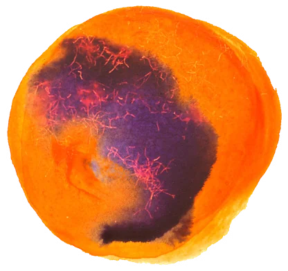
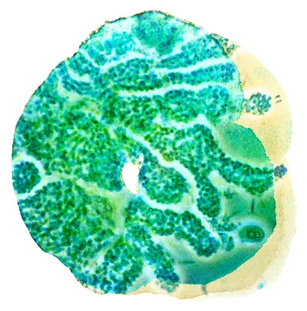
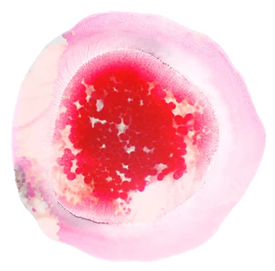
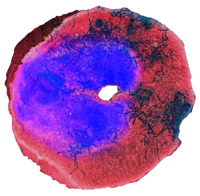
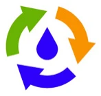
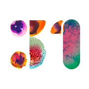

 ročník
ročníkkonference
 ve spolupráci s
ve spolupráci s

Konference
v telefonu
Program, dotazy k přednáškám, aktuality, svoz i navigace – průvodce Seč 27 máte stále po ruce. Bez instalace z obchodu, bez přihlašování.

Namiřte fotoaparát na QR kód
a klepněte na odkaz, který se objeví. Průvodce se otevře v prohlížeči.
pkobelka.github.io/konference/pruvodceiPhoneNa plochu za 3 klepnutí v Safari
- 1Klepněte na Sdíletdole na liště · v novém iOS nejdřív ⋯ vpravo dole → Sdílet
- 2Sjeďte níž a vyberte Přidat na plochu
- 3Klepněte na Přidatna ploše přibude ikona Seč 27

Otevřelo se vám to v e-mailu, WhatsAppu či Messengeru? Průvodce poradí – na plochu jde přidat jen ze Safari.
Android: v Chromu klepněte na ⋮ → Nainstalovat aplikaci (nebo Přidat na plochu).
27.–28. dubna 2027 · SečKongres hotel Jezerka